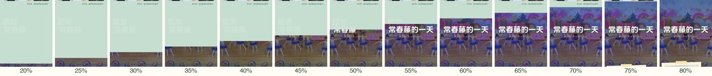
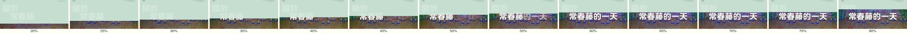
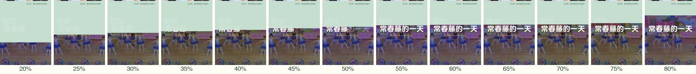
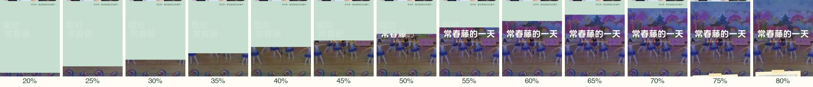
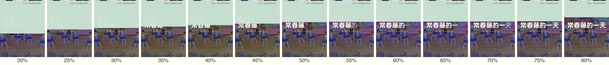
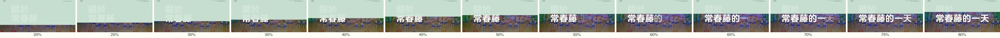

「關於＋常春藤＋的一天」接力：讓人發現、但不明說
2026-09-23 晚定案：1＋2（放慢＋逐字），已是首頁預設。?relay= 參數已移除，下面的網址參數只是當時的比稿紀錄，影片與膠卷條保留原樣。
目標是讓人注意到「關於常春藤」的「常春藤」接成了「常春藤的一天」，而且不加任何新元素（不用金線、不放幽靈「關於」、不加文字提示）。影片都用同一個捲動速度（320 px/s）錄製，桌機 1440×900、手機 390×844。膠卷條是簾幕捲動 20%→80% 之間每 5% 截一格：格子越多張停在同一個字上，代表那一刻停留越久。
先看這個：現況 vs 推薦組合（1＋2）
左邊是線上現況：擦除線掃過「常春藤」只佔大約 130px 的捲動（手機約 32px），滾輪滑一下就過了。右邊是在字上放慢，過完字後停一拍，讓「的一天」一個字一個字接上去。
現況（seam=2 預設）
基準/「的一天」在擦除線過字的最後 30% 一起淡入。

1 過字放慢＋停一拍
最含蓄?relay=slow擦除線經過「常春藤」字框時變慢，固定分到停拍前 45% 的捲動（桌機約 300px、手機約 170px）。過完字頂後，在兩行中間停一拍（約 14% 的捲動），畫面停在「關於／常春藤的一天」。字框外的擦除相對快一點，簾幕總長也拉長補回（桌機 0.85→1.1 屏，手機 0.55→0.8 屏）。不加任何元素，只改節奏。
要注意：停拍期間畫面上只有背景影片在動，捲得很慢的人可能會覺得頁面「頓了一下」。


2 「的一天」逐字接上
?relay=type「的」「一」「天」跟著捲動一個一個浮出：先是半透明，接著變白，同時往右滑 0.14em，跟浮水印是同一種語言。
單獨用的話，三個字全擠在過字的後 60% 裡，節奏很快，幾乎看不出逐字。要搭配 1 的停拍才有空間。

3 「關於」滑過去對齊
最明顯?relay=dock讀關於區時構圖不變，「關於」仍然貼左。擦除線從畫面底部往上走到「常春藤」之前，「關於」會跟著捲動往右滑 160px（1440 寬），左緣對齊「常」，排成兩行標題「關於／常春藤的一天」。滑動剛好填在原本空白的那段擦除裡，把視線帶到大字上。
手機上六個字已經撐滿螢幕寬，「關於」本來就幾乎對齊，只移約 10px，基本看不出來。
4 「常春藤」先浮出來
備選?relay=deepen擦除線接近前，只有「常春藤」三個字的透明度從 .5 提高到 .75（手機 .28→.50），「關於」不變。浮水印越接近白色，接縫變白那一下就越順。對手機幫助最大，因為手機浮水印最淡。
這個方向會碰到浮水印透明度固定的規則（09-18 否決過淡出），所以列為備選。
1＋2 推薦組合
推薦?relay=slow,type在字上放慢，把停拍（約 22% 的捲動）拿來一個字一個字寫出「的一天」。畫面依序讀成「關於常春藤」→「常春藤的一天」，沒加任何東西，只是讓那一刻長到看得見。

1＋2＋3 加強版
?relay=slow,type,dock在推薦組合上再加「關於」對齊。停拍時畫面是一個完整的兩行標題「關於／常春藤的一天」，最容易看懂，但也最有「設計過」的感覺。

- 參數可以任意組合，例如
?relay=slow,dock、?relay=type,deepen。定案後會把沒選上的碼和?relay=參數一起清掉。 - 錄影與截圖腳本放在
scripts/（Playwright，BASE 環境變數指向預覽 port）。 - 減少動態（prefers-reduced-motion）時沒有簾幕，也就沒有接力，所有方向都不會作用。